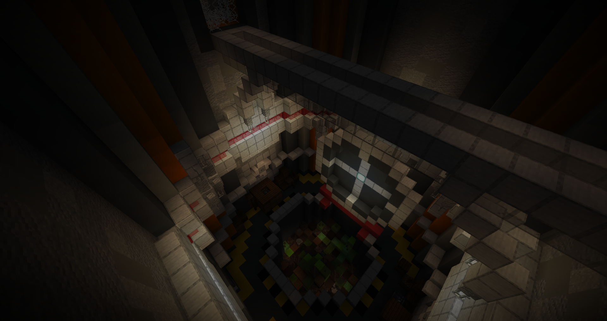
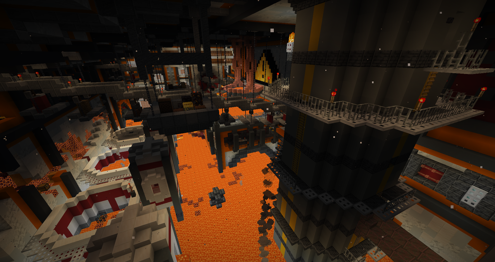
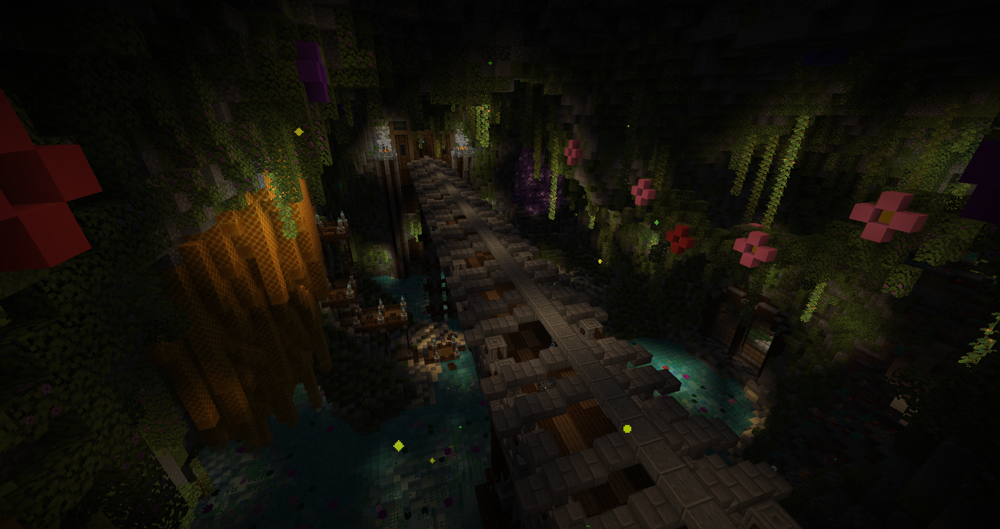
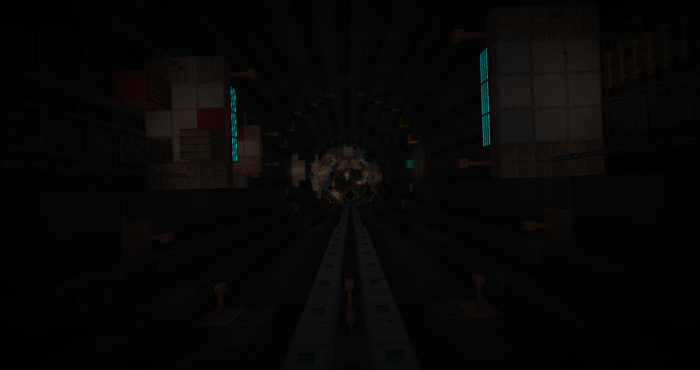
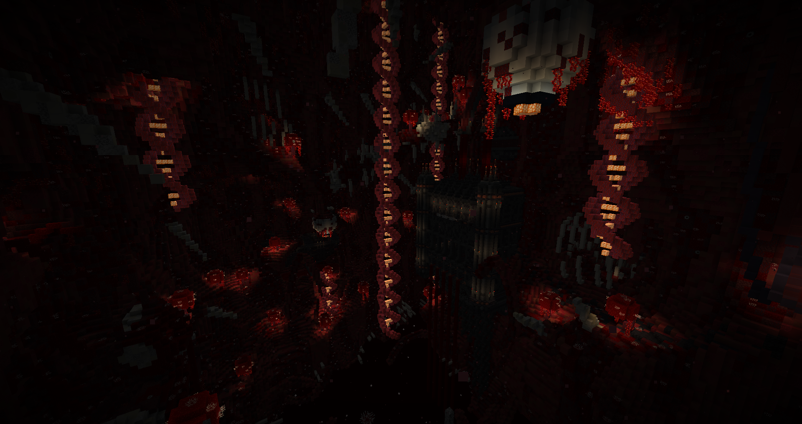
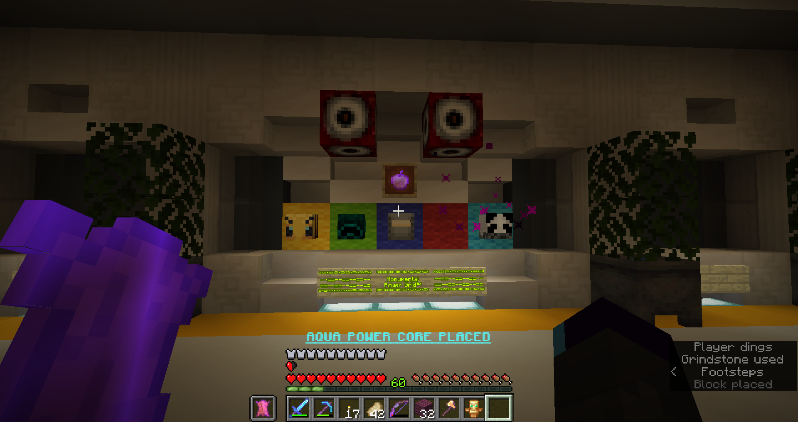

Author: Binsi
Origin: Map Link
Presentation
Paradigm is a medium length CTM map. It is linear with custom mechanics and textures.
This is also the first map of the maker.
Overview
The Refusal

The map starts and already something is apparent… or should I say the opposite; it is extremely dark and only by guessing the path do I begin playing.
Aside that, the first area is quite fun, introducing many elements and the plot. Another point that is very surprising is how long the area is, element that will prove to be consistent throughout the map.
The moving door and tram are well done and unexpected.
The Crucible

While the first area is linear, this one sends you first to the monument/base while teasing itself. Then you have no choice but to go back there. It’s a nice feat of level design and progression. (base which has somehow a farm field but plants won’t grow anyway…)
A lot more open but still overall linear through the strider obtention, this is where the map really starts to show its shine through the many dark soulsesque shortcuts and intricate levels.
The difficulty through hazards and mobs ramps up but stays at a comfortable balance (if you exclude one broken item that met lava soon enough). The antifire offhand is great design.
Chrysalis

Enters my favorite area of the map. The map removes all brakes here and you end up in a dizzingly labyrinthic mix of level designs with varied themes. You also need to find 2 parts of a key to reach the wool, topped with a final rush to leave the place chased by a boss.
Amazing area through and through.
The Descent

Making good use of the new height limit, the area is extremely vertical in layout. The incremental change as things get corrupted is really cool and made me wish the sound traps were exploited even more in unique designs.
The mobs got tougher but the gear keeps up. The final room had me stumped.
Schism

I didn’t know what to expect for the last area after everything I already went through, and it starts off with a nice change from the usual door unlock. It continues with a giant cave opening and probably where the combat loses its edge once you enter the lab.
The piglin crossbowers have so much health, they take 2-3 times more hits than the melee ones, and we don’t really get any worthy weapon to deal with them past that point. The bow is the only good option now, not to mention the weakness debuffs.
The darkness made it painful to clear the second half of the area, both straining and simply difficult to know where to go.
The boss was interesting but sadly it was very hard to avoid the falling attacks, so I kept getting hit and ended up burning through every single golden apple on me to barely win.
Conclusion

Where to start with this map? It had amazing areas and level design filled with Dark souls shortcuts everywhere. Each area was very unique with special mechanics and environment to explore through, keeping fresh.
Due to that though, the overscope is very apparent with gigantic sprawling areas which could each be several areas. The area fatigue is real, despite the gameplay renewing fairly often, too much content for the reasons to do it. Still really impressive that despite this overscope, it was filled quite well.
Speaking of that, the attention to detail was clearly there. But somehow it felt a bit too much, making the gameplay taking a toll on the player with the sheer amount of information to keep track of and explore through. Trying to find all the bonus objectives in this haystack of a masterpiece is a nightmare if somehow you miss one. I appreciate the hints on discord but they should have been in the map to begin with, please. (overall some placements could’ve been a bit less random as well)
The unlock for the next area to find is great and fun to add reasons for exploring more. Meanwhile the cave tunnels didn’t have much level design and are probably what suffered the most from so many gameplay segments.
Finally, the 2 main weak points of the map: the loot spread was awkward and the darkness was painful.
I can feel that there was some inexperience for that(in an otherwise close to perfect globality) because loot was not really distinguishable. With loot chests containing any kind of loot, and even harder to reach ones were often just basic, it made seeking loot less appealing since you’d get it all from what’s on your path. Not counting the cool unique and secret items, I think better gear could have benefitted from extra difficulty to obtain for it to feel rewarding.
As for the darkness, the map had an overall very somber color palette and was dimly lit, resulting in a very dark and difficult to see environment. Even though I play moody because it feels like a night vision like otherwise, I felt really punished for that here.
But all this are just trifles in the end, this is an amazing work, especially when you think that it’s a first map. It does a lot of fun stuff and ideas I wanted to do, so I’m really excited to see what else can come out in the future. This map is the fusion of Afterfall and Saturnine Memories factored by Ragecraft 3. Outstanding.